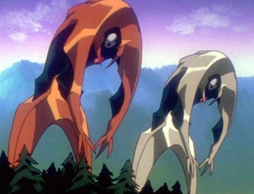
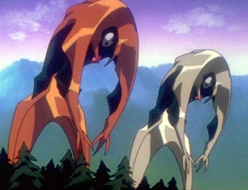

Сюжет
Neon Genesis Evangelion разворачивается в 2015 году, пятнадцать лет спустя
катастрофического Второго удара, изменившего климат и уничтожившего значительную
часть человечества; в ответ на появление загадочных существ — Ангелов — секретная
организация NERV создает гигантские биомеханические боевые машины Evangelion,
пилотировать которые могут лишь подростки с уникальной психической совместимостью.
Главный герой, четырнадцатилетний Синдзи Икари, по воле отстранённого отца, руководителя
NERV, вступает в команду пилотов, став оператором Евангелиона-01 не из чувства долга
или героизма, а из острой потребности обрести одобрение и понять собственную ценность.
Вместе с таинственной голубоволосой Рей Аянами и дерзкой Асукой Лангли Сорью Синдзи вынужден
противостоять Ангелам, чьи атаки сопровождаются разрушениями городов и психологическими травмами.
Постепенно внешние схватки сменяются внутренними бурями: герои сталкиваются с комплексами неполноценности,
страхом быть брошенными, борьбой за идентичность и желанием настоящей связи с окружающими. За кулисами этих
событий кроется тайный проект «Комплементация человечества», инициированный теневой группировкой SEELE,
чья цель — стереть барьеры между индивидуальными сознаниями и извлечь человечество из порочного круга одиночества.
По мере развития сюжета тон повествования всё больше смещается от классической меха-экшн драмы к глубокой
психоаналитической медитации: ритуализация боёв сопровождается религиозными и каббалистическими символами,
сцены погружения в LCL оборачиваются внутренними видениями героев, а травмы прошлого выходят на первый план.
В финале, отказавшись от навязанного выбора между поглощением чужой боли и самопринятием, Синдзи проходит через
экзистенциальный кризис, предлагающий зрителю не столько готовый ответ, сколько приглашение к саморефлексии: что
значит быть собой, любить и быть любимым в мире, где граница между реальностью и сознанием тонка, как полупрозрачная
оболочка Евангелиона?
Аска — «Второй Дитя» и пилот Евы-02, родилась 4 декабря 2001 г. в смешанной немецко‑японской семье, пережила травму после смерти матери, что закалило её волю и одновременно породило глубокую неуверенность в себе. Изначально обученная в Германии, она приезжает в Японию, где живёт под опекой Мисато Кацураги, вступает в соперничество с Синдзи, но по ходу событий их отношения трансформируются от вражды к уважению.
· В 2005 году мать Аски
участвует в эксперименте с Евой‑02, после чего получает тяжёлую
психическую травму и впоследствии кончает жизнь самоубийством.
· Соперничество с Синдзи
Икари: на протяжении битв с Ангелами она постоянно дразнит и
критикует его, но постепенно начинает уважать и даже скрыто
заботиться.
· Заключительная фаза:
пережив поражение и потерю воли к пилотированию, Аска впадает в
состояние «кататонии» в госпитале, что завершает основную сюжетную
арку.

Рей — «Первое Дитя» и пилот Евы‑00, клонированная из ДНК Юи Икари с вкраплениями духа Лилит; она родилась в результате эксперимента NERV и с самого начала отличается спокойным, замкнутым характером, почти лишённым эмоций, что меняется по мере развития сюжета, когда она сближается с Синдзи и начинает осознавать собственную личность.
· Девочку воспитывали
учёные NERV (Акияги Рицко и Гэндо Икари), она жила в изоляции и не
имела социальных связей до встречи с Синдзи и Мисато.
· Несмотря на кажущееся
спокойствие, она испытывает внутренний конфликт — осознание
«копии» и поиски собственной индивидуальности, что приводит к
самопожертвованию ради человечества.


Синдзи — «Третье Дитя» и пилот Евы‑01, сын Юи и Гэндо Икари, который после ранней смерти матери был брошен отцом и жил 11 лет у опекуна, прежде чем был вызван в Токио‑3 для борьбы с Ангелами. Он характеризуется застенчивостью, неуверенностью и постоянным внутренним конфликтом между желанием сбежать и долгом перед человечеством.
· После трагической гибели
Юи в эксперименте с Евой‑01, Гэндо доверил Синдзи опеке семейного
друга и преподавателя, где тот жил до вызова в NERV.
· Синдзи застенчивый,
замкнутый и часто пессимистичный; он склонен к самокопанию и
чувству вины за то, что не оправдывает ожиданий отца.
· Воспитание в отрыве от
родителей сформировало у него чувство ненужности и страха быть
брошенным.
Второстепенные персонажи
Мисато кацураги
Оперативный директор NERV, куратор пилотов и,
по сути, их взрослая "няня". С одной стороны
— она сильная, решительная и крутая. С другой
— у неё тоже сломанная психика, личные травмы,
и она заливает боль алкоголем. При
всей её заботе о Синдзи, она часто сама не знает,
как быть взрослой, и её поведение — тоже бегство.
Гендо Икари
Отец Синдзи и глава NERV. Холодный, манипулятор, всё
делает ради своей покойной жены, даже если это означает
жертвовать сыном. Он практически не общается с Синдзи,
но на самом деле его мотивы — не ненависть, а страх
потерять всё, что ему дорого. Это один из самых
сложных и жутко интересных персонажей.
Каору Нагиса
Появляется под
конец сериала. Он спокоен, доброжелателен и сразу
же сближается с Синдзи, словно понимает его с полуслова.
На деле он — последний Ангел, пришедший с миром, но
вынужденный принять трагичное решение. Его персонаж
— символ надежды, любви и невинности.
Рицуко Акаги
Главный научный сотрудник NERV и один из умнейших персонажей.
Она находится в тени — всегда рядом с Гэндо, всегда в роли
"той, кто делает грязную работу". повторяет судьбу своей
матери, осознавая
это, но не в силах остановиться. Она —
идеальный пример того, как интеллект не спасает
от внутренних демонов.
Рёдзи Кадзи
Шпион, двойной агент и бывший любовник Мисато. Он единственный
взрослый, кто осознаёт масштаб происходящего и пытается как-то
повлиять на систему. Его спокойствие и философия — контраст
на фоне остального ада. Он — тот, кто понимает и Мисато,
и Синдзи, но платит за свою осведомлённость
жизнью.
Пен Пен
Полутеплокровный домашний пингвин Мисато. Это комедийный и
уютный элемент среди всего кошмара сериала. Он почти не влияет
на сюжет, но зрители его обожают. Его наличие — глоток
нормальности в мире, где всё разваливается на части. Даже
в аду тебе нужен хотя бы один добрый пингвин.
Ангелы
Адам
Лилит
Сакиил
Самусиил
Рамиил
Гагиил
Исрафил
Сандалфон
Маториил
Сахакиил
Ируил
Лелиил
Бардиил
Зеруил
Ариил
Армисаил
Табрис
Лилин
1
2
3
4
5
6
7
8
9
10
11
12
13
14
15
16
17
18
 

Порядок просмотра
- 1. Сериал «Евангелион»: 1–24 серии (1995–1996 годы).
- 2. Фильм «Конец Евангелиона», 2 части (лето 1997 года).
- 3. Сериал «Евангелион»: 25–26 серии (1996 год).
- 4. Фильм «Евангелион: Смерть и перерождение» (весна 1997 года).
- 5. Фильм «Евангелион 1.11: Ты (не) один» (2007 год).
- 6. Фильм «Евангелион 2.22: Ты (не) пройдешь» (2009 год).
- 7. Фильм «Евангелион 3.33: Ты (не) исправишь» (2012 год).
- 8. Фильм «Евангелион 3.0+1.01: Как-то раз» (2021 год).